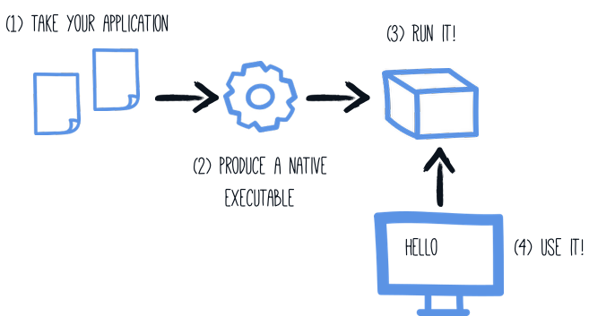
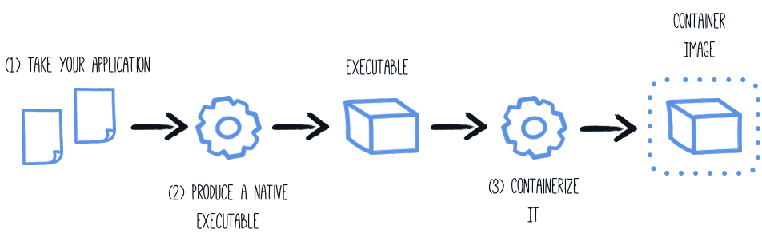

Criando um executável nativo
Este guia inclui:
-
Compilar a aplicação para um executável nativo
-
Empacotar o executável nativo em um container
-
Debugando um executável nativo
Este guia utiliza como base a aplicação desenvolvida no Guia de Iniciação.
GraalVM
A criação de um executável nativo requer o uso de uma distribuição do GraalVM. Há três distribuições: Oracle GraalVM Community Edition (CE), Oracle GraalVM Enterprise Edition (EE) e Mandrel. As diferenças entre as distribuições Oracle e Mandrel são as seguintes:
-
O Mandrel é uma distribuição downstream do Oracle GraalVM CE. O principal objetivo do Mandrel é fornecer uma maneira de criar executáveis nativos projetados especificamente para dar suporte ao Quarkus.
-
As versões Mandrel são criadas a partir de uma base de código derivada da base de código do Oracle GraalVM CE, com apenas pequenas alterações, mas algumas exclusões significativas que não são necessárias para os aplicativos nativos do Quarkus. Eles suportam os mesmos recursos para criar executáveis nativos que o Oracle GraalVM CE, sem alterações significativas na funcionalidade. Notavelmente, eles não incluem suporte para programação poliglota. O motivo dessas exclusões é oferecer um melhor nível de suporte para a maioria dos usuários do Quarkus. Essas exclusões também significam que o Mandrel oferece uma redução considerável no tamanho de sua distribuição quando comparado ao Oracle GraalVM CE/EE.
-
O Mandrel foi desenvolvido de forma ligeiramente diferente do Oracle GraalVM CE, usando o projeto OpenJDK padrão. Isso significa que ele não se beneficia de alguns pequenos aprimoramentos que a Oracle adicionou à versão do OpenJDK usada para criar seus próprios downloads do GraalVM. Esses aprimoramentos são omitidos porque o OpenJDK upstream não os gerencia e não pode garantir eles. Isso é particularmente importante quando se trata de conformidade e segurança.
-
O Mandrel é recomendado para a criação de executáveis nativos voltados para ambientes em contêineres do Linux. Isso significa que os usuários do Mandrel são incentivados a usar contêineres para criar seus executáveis nativos. Se estiver criando executáveis nativos para o macOS, considere o uso do Oracle GraalVM, pois o Mandrel não está voltado para essa plataforma no momento. É possível criar executáveis nativos diretamente no Linux ou Windows rodando diretamente no hardware, com detalhes disponíveis no LEIAME do Mandrel e nos lançamentos do Mandrel .
Pré-requisitos
Para concluir este guia, você precisa:
-
Cerca de 15 minutos
-
Um IDE
-
JDK 11+ instalado com 'JAVA_HOME' configurado adequadamente
-
Apache Maven 3.8.6
-
Um container runtime instalado (Docker ou Podman)
-
Opcionalmente, o Quarkus CLI se você quiser usá-lo
-
Mandrel ou GraalVM instalado e configurado adequadamente
-
O código da aplicação desenvolvida no Guia de Iniciação.
|
Suporte à compilação nativa em C
O que significa ter um ambiente de desenvolvimento em C?
|
Configurando a GraalVM
|
If you cannot install GraalVM, you can use a multi-stage Docker build to run Maven inside a Docker container that embeds GraalVM. There is an explanation of how to do this at the end of this guide. |
Version 22.3 is required. Using the community edition is enough.
-
Instale o GraalVM se ainda não o fez. Existem algumas opções para isso:
-
Download do arquivo apropriado de https://github.com/graalvm/mandrel/releases ou https://github.com/graalvm/graalvm-ce-builds/releases e descompacte-o como faria com qualquer outro JDK.
-
Use platform-specific install tools like sdkman, homebrew, or scoop.
-
-
Configurar o runtime environment. Defina a variável de ambiente
GRAALVM_HOMEpara o diretório de instalação do GraalVM, por exemplo:export GRAALVM_HOME=$HOME/Development/graalvm/No macOS (não suportado pelo Mandrel), aponte a variável para o subdiretório
Home:export GRAALVM_HOME=$HOME/Development/graalvm/Contents/Home/No Windows, você terá que ir até o Painel de Controle para definir as suas variáveis de ambiente.
A instalação através do scoop irá fazer tudo por você.
-
(Only for Oracle GraalVM CE/EE) Install the
native-imagetool usinggu install:${GRAALVM_HOME}/bin/gu install native-imageSome previous releases of GraalVM included the
native-imagetool by default. This is no longer the case; it must be installed as a second step after GraalVM itself is installed. Note: there is an outstanding issue using GraalVM with macOS Catalina. -
(Opcional) Defina a variável de ambiente
JAVA_HOMEpara o diretório de instalação do GraalVM.export JAVA_HOME=${GRAALVM_HOME} -
(Opcional) Adicione o diretório
binGraalVMbinno PATHexport PATH=${GRAALVM_HOME}/bin:$PATH
|
Issues using GraalVM with macOS Catalina
GraalVM binaries are not (yet) notarized for macOS Catalina as reported in this GraalVM issue. This means that you may see the following error when using Use o seguinte comando para excluir recursivamente o atributo estendido |
Solução
Recomendamos que siga as instruções nos passos seguintes e que prepare a aplicação passo a passo. No entanto, pode ir diretamente para o exemplo completo.
Clone o repositório Git: git clone https://github.com/quarkusio/quarkus-quickstarts.git, ou baixe um arquivo.
A solução está localizada no diretório getting-started.
Desenvolvendo um executável nativo
O executável nativo da nossa aplicação conterá o código da aplicação, as bibliotecas necessárias, as APIs Java e uma versão reduzida de uma VM. A base menor da VM melhora o tempo de inicialização da aplicação e cria um espaço menor em disco.

Se gerou a aplicação do tutorial anterior, pode encontrar no pom.xml o seguinte profile:
<profiles>
<profile>
<id>native</id>
<properties>
<quarkus.package.type>native</quarkus.package.type>
</properties>
</profile>
</profiles>|
Você pode fornecer opções personalizadas para o comando Outra possibilidade é incluir a propriedade de configuração You can find more information about how to configure the native image building process in the Configuração do executável nativo section below. |
Usamos um perfil porque, como você verá em breve, o empacotamento do executável nativo leva alguns minutos. Você poderia simplesmente passar -Dquarkus.package.type=native como uma propriedade na linha de comando, mas é melhor usar um perfil, pois isso permite que os testes de imagem nativa também sejam executados.
Criar um executável nativo utilizando:
quarkus build --native./mvnw install -Dnative./gradlew build -Dquarkus.package.type=native|
Problemas com o empacotamento no Windows
The Microsoft Native Tools for Visual Studio must first be initialized before packaging. You can do this by starting
the Outra solução é escrever um script para fazer isso para você: |
Além dos arquivos normais, a construção também produz target/getting-started-1.0.0-SNAPSHOT-runner . Você pode executá-lo usando: ./target/getting-started-1.0.0-SNAPSHOT-runner .
|
Java preview features
O código Java que depende de recursos preview requer atenção especial. Para produzir um executável nativo, isso significa que o sinalizador |
Buildando executáveis nativos totalmente estáticos
| O suporte a executáveis nativos totalmente estáticos é experimental. |
On Linux it’s possible to package a native executable that doesn’t depend on any system shared library.
There are some system requirements to be fulfilled and additional build arguments to be used along with the native-image invocation, a minimum is -Dquarkus.native.additional-build-args="--static","--libc=musl".
A compilação de binários totalmente estáticos é feita através de um link estático com o musl em vez de glibc e não deve ser usada em produção sem testes rigorosos.
Testando o executável nativo
Produzir um executável nativo pode gerar alguns problemas e, por isso, também é uma boa ideia executar alguns testes na aplicação em execução no arquivo nativo. O raciocínio é explicado no Guia de testes.
To see the GreetingResourceIT run against the native executable, use ./mvnw verify -Pnative:
$ ./mvnw verify -Pnative
...
[getting-started-1.0.0-SNAPSHOT-runner:18820] universe: 587.26 ms
[getting-started-1.0.0-SNAPSHOT-runner:18820] (parse): 2,247.59 ms
[getting-started-1.0.0-SNAPSHOT-runner:18820] (inline): 1,985.70 ms
[getting-started-1.0.0-SNAPSHOT-runner:18820] (compile): 14,922.77 ms
[getting-started-1.0.0-SNAPSHOT-runner:18820] compile: 20,361.28 ms
[getting-started-1.0.0-SNAPSHOT-runner:18820] image: 2,228.30 ms
[getting-started-1.0.0-SNAPSHOT-runner:18820] write: 364.35 ms
[getting-started-1.0.0-SNAPSHOT-runner:18820] [total]: 52,777.76 ms
[INFO]
[INFO] --- maven-failsafe-plugin:2.22.1:integration-test (default) @ getting-started ---
[INFO]
[INFO] -------------------------------------------------------
[INFO] T E S T S
[INFO] -------------------------------------------------------
[INFO] Running org.acme.quickstart.GreetingResourceIT
Executing [/data/home/gsmet/git/quarkus-quickstarts/getting-started/target/getting-started-1.0.0-SNAPSHOT-runner, -Dquarkus.http.port=8081, -Dtest.url=http://localhost:8081, -Dquarkus.log.file.path=build/quarkus.log]
2019-04-15 11:33:20,348 INFO [io.quarkus] (main) Quarkus 999-SNAPSHOT started in 0.002s. Listening on: http://[::]:8081
2019-04-15 11:33:20,348 INFO [io.quarkus] (main) Installed features: [cdi, resteasy-reactive]
[INFO] Tests run: 2, Failures: 0, Errors: 0, Skipped: 0, Time elapsed: 1.387 s - in org.acme.quickstart.GreetingResourceIT
...|
By default, Quarkus waits for 60 seconds for the native image to start before automatically failing the native tests. This
duration can be changed using the |
|
This procedure was formerly accomplished using the |
Profiles
Por padrão, os testes de integração build e run são feitos usando o profile prod.
You can override the profile the executable runs with during the test using the quarkus.test.native-image-profile property.
Either by adding it to application.properties or by appending it to the command line:
./mvnw verify -Pnative -Dquarkus.test.native-image-profile=test.
Your %test. prefixed properties will be used at the test runtime.
You can override the profile the executable is built with and runs with using the quarkus-profile=test property, e.g.
./mvnw clean verify -Pnative -Dquarkus-profile=test. This might come handy if there are test specific resources to be processed,
such as importing test data into the database.
quarkus.native.resources.includes=version.txt
%test.quarkus.native.resources.includes=version.txt,import-dev.sql
%test.quarkus.hibernate-orm.database.generation=drop-and-create
%test.quarkus.hibernate-orm.sql-load-script=import-dev.sqlCom o exemplo mencionado acima em seu application.properties , o banco de dados gerenciado do Hibernate ORM será preenchido com dados de teste durante a execução do teste no modo JVM e durante a execução do teste no modo nativo. O executável de produção conterá apenas o recurso version.txt , sem dados de teste supérfluos.
|
The executable built with |
Java preview features
|
Java preview features
O código Java que depende de recursos preview requer atenção especial. Para testar um executável nativo, isso significa que o indicador |
Excluindo testes ao executar como um executável nativo
Ao executar testes dessa forma, as únicas coisas que realmente são executadas nativamente são os endpoints da aplicação, que só podem ser testados por meio de chamadas HTTP. Seu código de teste não é realmente executado nativamente, portanto, se você estiver testando um código que não chama seus endpoints HTTP, provavelmente não é uma boa ideia executá-los como parte dos testes nativos.
Se você compartilhar sua classe de teste entre a JVM e as execuções nativas, como aconselhamos acima, poderá marcar determinados testes com a anotação @DisabledOnIntegrationTest para ignorá-los ao testar uma imagem nativa.
|
Usar |
Testar um executável nativo existente
It is also possible to re-run the tests against a native executable that has already been built. To do this run
./mvnw test-compile failsafe:integration-test -Pnative. This will discover the existing native image and run the tests against it using failsafe.
Se o processo não conseguir encontrar a imagem nativa por algum motivo ou se você quiser testar uma imagem nativa que não esteja mais no diretório de destino, poderá especificar o executável com a propriedade de sistema -Dnative.image.path= .
Criando um executável Linux sem o GraalVM instalado
| Antes de prosseguir, certifique-se de ter um ambiente de tempo de execução de contêiner em funcionamento (Docker, podman). Se usar o Docker no Windows, compartilhe a unidade do seu projeto nas configurações de compartilhamento de arquivos do Docker Desktop e reinicie o Docker Desktop. |
Muitas vezes, é necessário apenas criar um executável Linux nativo para o aplicativo Quarkus (por exemplo, para ser executado em um ambiente de contêiner) e evitar o trabalho de instalar a versão adequada do GraalVM para realizar essa tarefa (por exemplo, em ambientes de CI, é prática comum instalar o mínimo de software possível).
Para isso, o Quarkus oferece uma maneira muito conveniente de criar um executável nativo do Linux, aproveitando um tempo de execução de contêiner, como o Docker ou o podman. A maneira mais fácil de realizar essa tarefa é executar:
quarkus build --native --no-tests -Dquarkus.native.container-build=true
# The --no-tests flag is required only on Windows and macOS../mvnw install -Dnative -DskipTests -Dquarkus.native.container-build=true./gradlew build -Dquarkus.package.type=native -Dquarkus.native.container-build=true|
Por padrão, o Quarkus detecta automaticamente o tempo de execução do contêiner. Se quiser selecionar explicitamente o tempo de execução do contêiner, você pode fazer isso com: Para o Docker: CLI
Maven
Gradle
Para o podman: CLI
Maven
Gradle
These are normal Quarkus config properties, so if you always want to build in a container
it is recommended you add these to your |
|
Se vir o seguinte erro de caminho inválido para o JAR da sua aplicação ao tentar criar um executável nativo utilizando uma build em contêiner, mesmo o JAR ter sido compilado com sucesso, é muito provável que esteja utilizando um daemon remoto para o tempo de execução do contêiner. Error: Invalid Path entry getting-started-1.0.0-SNAPSHOT-runner.jar Caused by: java.nio.file.NoSuchFileException: /project/getting-started-1.0.0-SNAPSHOT-runner.jar Neste caso, utilize o parâmetro O motivo para isso é que o driver do build local é executado através do |
|
Building with Mandrel requires a custom builder image parameter to be passed additionally: CLI
Maven
Gradle
Observe que o comando acima aponta para um indicador flutuante. É altamente recomendável usar o indicador flutuante para que a imagem do construtor permaneça atualizada e segura. Se for absolutamente necessário, você pode codificar para um indicador específico (veja aqui os indicadores disponíveis), mas esteja ciente de que não receberá atualizações de segurança dessa forma e não há suporte para isso. |
Criando um contêiner
Utilizar as extensões dos container-image
A maneira mais fácil de criar uma container-image a partir da sua aplicação Quarkus é utilizar uma das extensões de imagem de contêiner.
Se uma dessas extensões estiverem presente, então a criação de uma imagem de contêiner para o executável nativo é executar um único comando:
./mvnw package -Pnative -Dquarkus.native.container-build=true -Dquarkus.container-image.build=true-
quarkus.native.container-build=truepermite criar um executável Linux sem que o GraalVM esteja instalado (e só é necessário se não tiver o GraalVM instalado localmente ou se o seu sistema operacional local não for Linux)
|
Se estiver executando um daemon Docker remoto, você terá que substituir See Creating a Linux executable without GraalVM installed for more details. |
-
quarkus.container-image.build=trueinstrui o Quarkus para criar um container-image utilizando o artefato final da aplicação (que, neste caso, é o executável nativo)
Consulte o Guia do container-image para obter mais informações.
Utilizando a micro imagem base manualmente
É possível executar a aplicação em um contêiner usando o JAR produzido pelo Quarkus Maven Plugin. No entanto, nesta seção, vamos nos concentrar na criação de uma imagem de contêiner usando o executável nativo produzido.

When using a local GraalVM installation, the native executable targets your local operating system (Linux, macOS, Windows etc). However, as a container may not use the same executable format as the one produced by your operating system, we will instruct the Maven build to produce an executable by leveraging a container runtime (as described in this section):
O executável produzido será um executável Linux de 64 bits, portanto, dependendo do seu sistema operacional, ele pode não ser mais executável. No entanto, isso não é um problema, pois vamos copiá-lo para um contêiner. A geração do projeto forneceu um Dockerfile.native-micro no diretório src/main/docker com o seguinte conteúdo:
FROM quay.io/quarkus/quarkus-micro-image:2.0
WORKDIR /work/
COPY target/*-runner /work/application
RUN chmod 775 /work
EXPOSE 8080
CMD ["./application", "-Dquarkus.http.host=0.0.0.0"]|
Quarkus Micro Image?
O Quarkus Micro Image é uma pequena imagem de contêiner que fornece o conjunto certo de dependências para executar sua aplicação nativa. Ela é baseada no UBI Micro. Essa imagem base foi adaptada para funcionar perfeitamente em contêineres. Você pode ler mais sobre as imagens UBI em: As imagens UBI podem ser utilizadas sem qualquer limitações. Esta página explica como extender a imagem |
Depois, se não tiver deletado o executável nativo criado, pode construir a imagem docker com:
docker build -f src/main/docker/Dockerfile.native-micro -t quarkus-quickstart/getting-started .E, finalmente, execute-o com:
docker run -i --rm -p 8080:8080 quarkus-quickstart/getting-startedUtilizando manualmente a imagem base mínima
A geração do projeto também forneceu um Dockerfile.native na pasta src/main/docker com o seguinte conteúdo:
FROM registry.access.redhat.com/ubi8/ubi-minimal:8.6
WORKDIR /work/
COPY target/*-runner /work/application
RUN chmod 775 /work
EXPOSE 8080
CMD ["./application", "-Dquarkus.http.host=0.0.0.0"]A imagem mínima da UBI é maior do que a micro mencionada acima. Ela contém mais utilitários, como o gerenciador de pacotes microdnf .
Utilizar uma compilação do Docker multi-stage
A seção anterior mostrou como criar um executável nativo usando o Maven ou o Gradle, mas isso exige que o executável nativo tenha sido criado primeiro. Além disso, esse executável nativo deve ser um executável Linux de 64 bits.
Talvez você queira criar o executável nativo diretamente em um contêiner sem ter um contêiner final que contenha as ferramentas de criação. Essa abordagem é possível com uma compilação do Docker em vários estágios:
-
O primeiro estágio faz o build do executável nativo utilizando o Maven ou o Gradle
-
O segundo estágio é uma imagem mínima que copia o executável nativo produzido
|
Antes de construir uma imagem de contêiner a partir dos Dockerfiles mostrados abaixo, é necessário atualizar o arquivo |
Esta construção em vários estágios pode ser realizada da seguinte forma:
Exemplo de Dockerfile para fazer o build com o Maven:
## Stage 1 : build with maven builder image with native capabilities
FROM quay.io/quarkus/ubi-quarkus-graalvmce-builder-image:22.3-java17 AS build
COPY --chown=quarkus:quarkus mvnw /code/mvnw
COPY --chown=quarkus:quarkus .mvn /code/.mvn
COPY --chown=quarkus:quarkus pom.xml /code/
USER quarkus
WORKDIR /code
RUN ./mvnw -B org.apache.maven.plugins:maven-dependency-plugin:3.1.2:go-offline
COPY src /code/src
RUN ./mvnw package -Pnative
## Stage 2 : create the docker final image
FROM quay.io/quarkus/quarkus-micro-image:2.0
WORKDIR /work/
COPY --from=build /code/target/*-runner /work/application
# set up permissions for user `1001`
RUN chmod 775 /work /work/application \
&& chown -R 1001 /work \
&& chmod -R "g+rwX" /work \
&& chown -R 1001:root /work
EXPOSE 8080
USER 1001
CMD ["./application", "-Dquarkus.http.host=0.0.0.0"]
This multi-stage Docker build copies the Maven wrapper from the host machine.
The Maven wrapper (or the Gradle wrapper) is a convenient way to provide a specific version of Maven/Gradle.
It avoids having to create a base image with Maven and Gradle.
To provision the Maven Wrapper in your project, use: mvn -N org.apache.maven.plugins:maven-wrapper-plugin:3.1.0:wrapper.
|
Salve esse arquivo em src/main/docker/Dockerfile.multistage, uma vez que não está incluído no startup rápido.
Exemplo de Dockerfile para build com o Gradle:
## Stage 1 : build with maven builder image with native capabilities
FROM quay.io/quarkus/ubi-quarkus-graalvmce-builder-image:22.3-java17 AS build
USER root
RUN microdnf install findutils
COPY --chown=quarkus:quarkus gradlew /code/gradlew
COPY --chown=quarkus:quarkus gradle /code/gradle
COPY --chown=quarkus:quarkus build.gradle /code/
COPY --chown=quarkus:quarkus settings.gradle /code/
COPY --chown=quarkus:quarkus gradle.properties /code/
USER quarkus
WORKDIR /code
COPY src /code/src
RUN ./gradlew build -Dquarkus.package.type=native
## Stage 2 : create the docker final image
FROM quay.io/quarkus/quarkus-micro-image:2.0
WORKDIR /work/
COPY --from=build /code/build/*-runner /work/application
RUN chmod 775 /work
EXPOSE 8080
CMD ["./application", "-Dquarkus.http.host=0.0.0.0"]Se estiver utilizando o Gradle no seu projeto, pode utilizar este exemplo de Dockerfile. Salve-o em src/main/docker/Dockerfile.multistage.
docker build -f src/main/docker/Dockerfile.multistage -t quarkus-quickstart/getting-started .E, finalmente, execute-o com:
docker run -i --rm -p 8080:8080 quarkus-quickstart/getting-started|
Se precisar de suporte SSL no seu executável nativo, pode facilmente incluir as bibliotecas necessárias na sua imagem Docker. Consulte o nosso guia Usando SSL com executáveis nativos para obter mais informações. |
|
To use Mandrel instead of GraalVM CE, update the |
|
Starting with 22.3, Mandrel does not provide a |
Usando uma imagem base sem distribuição
| O suporte de imagens sem distribuição é experimental. |
Se estiver procurando por imagens de contêineres pequenas, a abordagem sem distribuição reduz o tamanho da camada base. A ideia por trás do sem distribuição é o uso de uma imagem base única e mínima que contenha todos os requisitos e, às vezes, até a própria aplicação.
O Quarkus fornece uma imagem base sem distribuição que você pode usar no seu Dockerfile . Você só precisa copiar sua aplicação e pronto:
FROM quay.io/quarkus/quarkus-distroless-image:2.0
COPY target/*-runner /application
EXPOSE 8080
USER nonroot
CMD ["./application", "-Dquarkus.http.host=0.0.0.0"]O Quarkus fornece a imagem quay.io/quarkus/quarkus-distroless-image:2.0 . Ela contém os pacotes necessários para rodar um executável nativo e tem apenas 9 Mb. Basta adicionar sua aplicação sobre essa imagem e você obterá uma imagem de contêiner minúscula.
As imagens sem distribuição não devem ser utilizadas em produção sem um teste rigoroso.
Criar uma imagem scratch
| O suporte de imagens scratch é experimental. |
O build de binários totalmente linkados estaticamente permite a utilização de uma imagem de rascunho contendo apenas o executável nativo resultante.
Exemplo de Dockerfile de vários estágios para criar uma imagem a partir de scratch:
## Stage 1 : build with maven builder image with native capabilities
FROM quay.io/quarkus/ubi-quarkus-graalvmce-builder-image:22.3-java17 AS build
USER root
RUN microdnf install make gcc
COPY --chown=quarkus:quarkus mvnw /code/mvnw
COPY --chown=quarkus:quarkus .mvn /code/.mvn
COPY --chown=quarkus:quarkus pom.xml /code/
RUN mkdir /musl && \
curl -L -o musl.tar.gz https://more.musl.cc/11.2.1/x86_64-linux-musl/x86_64-linux-musl-native.tgz && \
tar -xvzf musl.tar.gz -C /musl --strip-components 1 && \
curl -L -o zlib.tar.gz https://www.zlib.net/zlib-1.2.13.tar.gz && \
mkdir zlib && tar -xvzf zlib.tar.gz -C zlib --strip-components 1 && \
cd zlib && ./configure --static --prefix=/musl && \
make && make install && \
cd .. && rm -rf zlib && rm -f zlib.tar.gz && rm -f musl.tar.gz
ENV PATH="/musl/bin:${PATH}"
USER quarkus
WORKDIR /code
RUN ./mvnw -B org.apache.maven.plugins:maven-dependency-plugin:3.1.2:go-offline
COPY src /code/src
RUN ./mvnw package -Pnative -DskipTests -Dquarkus.native.additional-build-args="--static","--libc=musl"
## Stage 2 : create the final image
FROM scratch
COPY --from=build /code/target/*-runner /application
EXPOSE 8080
ENTRYPOINT [ "/application" ]As imagens Scratch não devem ser utilizadas em produção sem um teste rigoroso.
| As versões de musl e zlib podem precisar serem atualizadas para atender os requisitos do executável de imagem nativa (e UPX se utilizar compressão de imagem nativa). |
Compactar imagens nativas
O Quarkus pode compactar o executável nativo produzido usando UPX. Mais detalhes na documentação de Compressão UPX .
Separando a compilação de imagens nativas e Java
In certain circumstances, you may want to build the native image in a separate step.
For example, in a CI/CD pipeline, you may want to have one step to generate the source that will be used for the native image generation and another step to use these sources to actually build the native executable.
For this use case, you can set the quarkus.package.type=native-sources.
This will execute the java compilation as if you had started native compilation (-Pnative), but stops before triggering the actual call to GraalVM’s native-image.
$ ./mvnw clean package -Dquarkus.package.type=native-sourcesApós finalizar a compilação, você encontrará o artefato compilado em target/native-sources:
$ cd target/native-sources
$ ls
native-image.args getting-started-1.0.0-SNAPSHOT-runner.jar libFrom the output above one can see that, in addition to the produced jar file and the associated lib directory, a text file named native-image.args was created.
This file holds all parameters (including the name of the JAR to compile) to pass along to GraalVM’s native-image command.
If you have GraalVM installed, you can start the native compilation by executing:
$ cd target/native-source
$ native-image $(cat native-image.args)
...
$ ls
native-image.args
getting-started-1.0.0-SNAPSHOT-runner
getting-started-1.0.0-SNAPSHOT-runner.build_artifacts.txt
getting-started-1.0.0-SNAPSHOT-runner.jarO processo para o Gradle é análogo.
Também é possível executar o processo de compilação num contêiner:
cd target/native-image
docker run \
-it \
--rm \
--v $(pwd):/work (1)
-w /work (2)
--entrypoint bin/sh \
quay.io/quarkus/ubi-quarkus-graalvmce-builder-image:22.3-java17 \ (3)
-c "native-image $(cat native-image.args) -J-Xmx4g" (4)| 1 | Monte o diretório raiz target/native-image no diretório do contêiner /work. Assim, o binário gerado também será escrito neste diretório. |
| 2 | Mude o diretório de trabalho para /work, que foi montado em <1>. |
| 3 | Use the quay.io/quarkus/ubi-quarkus-graalvmce-builder-image:22.3-java17 docker image introduced in Using a multi-stage Docker build to build the native image. |
| 4 | Chamar native-image com o conteúdo do arquivo native-image.args como argumentos. Também fornecemos um argumento adicional para limitar a memória máxima do processo a 4 Gigabytes (isto pode variar dependendo do projeto que está sendo construído e da máquina que está sendo usada). |
|
Se você estiver executando em uma máquina Windows, lembre-se de que o binário foi criado em um contêiner docker do Linux. Portanto, o binário não será executável na máquina Windows do hospedeiro. |
Uma visão geral de alto nível do que seriam as várias etapas de um pipeline CI/CD é a seguinte:
-
Registar a saída da etapa que executa o comando
./mvnw …(ou seja, o diretóriotarget/native-image) como um artefacto de construção, -
Exigir este artefacto no passo que executa o comando
native-image …, e -
Registar a saída do passo que executa o comando
native-image …(ou seja, arquivos que correspondem atarget/*runner) como artefacto de build.
O ambiente que executa o passo 1 apenas necessita do Java e Maven (ou Gradle) instalados, enquanto o ambiente que executa o passo 3 apenas necessita de uma instalação GraalVM (incluindo a funcionalidade native-image ).
Dependendo do resultado final desejado do pipeline CI/CD, o binário gerado pode então ser utilizado para criar uma imagem de contêiner.
Debugando um executável nativo
Starting with Oracle GraalVM 20.2 or Mandrel 20.1,
debug symbols for native executables can be generated for Linux environments
(Windows support is still under development, macOS is not supported).
These symbols can be used to debug native executables with tools such as gdb.
Para gerar símbolos de depuração, adicione o sinalizador -Dquarkus.native.debug.enabled=true ao gerar o executável nativo. Você encontrará os símbolos de depuração para o executável nativo em um arquivo .debug ao lado do executável nativo.
|
The generation of the Quando |
Além dos símbolos de depuração, a configuração do sinalizador -Dquarkus.native.debug.enabled=true gera um cache de arquivos de origem para todas as classes de tempo de execução do JDK, classes do GraalVM e classes de aplicação resolvidas durante a geração do executável nativo. Esse cache de fontes é útil para ferramentas de depuração nativas, para estabelecer o vínculo entre os símbolos e o código-fonte correspondente. Ele fornece uma maneira conveniente de disponibilizar apenas os códigos-fonte necessários para o depurador/IDE ao depurar um executável nativo.
Fontes para dependências jar de terceiros, incluindo o código-fonte do Quarkus, não são adicionadas ao cache de fontes por padrão. Para incluí-los, certifique-se de invocar mvn dependency:sources primeiro. Essa etapa é necessária para extrair os códigos-fonte dessas dependências e incluí-los no cache de código-fonte.
A cache de fonte está localizado na pasta target/sources.
|
Se executar no prompt Ou começar por exemplo, |
Para obter um guia mais detalhado sobre o debug de imagens nativas, consulte o Guia de Referência Nativo.
Configuração do executável nativo
Há várias opções de configuração diferentes que podem afetar a forma como o executável nativo é gerado. Elas são fornecidas em application.properties da mesma forma que qualquer outra propriedade de configuração.
As propriedades são apresentadas abaixo:
Configuration property fixed at build time - All other configuration properties are overridable at runtime
Tipo |
Padrão |
|
|---|---|---|
Comma-separated, additional arguments to pass to the build process. If an argument includes the Environment variable: Show more |
list of string |
|
If the HTTP url handler should be enabled, allowing you to do URL.openConnection() for HTTP URLs Environment variable: Show more |
boolean |
|
If the HTTPS url handler should be enabled, allowing you to do URL.openConnection() for HTTPS URLs Environment variable: Show more |
boolean |
|
The default value for java.awt.headless JVM option. Switching this option affects linking of awt libraries. Environment variable: Show more |
boolean |
|
Defines the file encoding as in Environment variable: Show more |
string |
|
If all character sets should be added to the native image. This increases image size Environment variable: Show more |
boolean |
|
The location of the Graal distribution Environment variable: Show more |
string |
|
The location of the JDK Environment variable: Show more |
|
|
The maximum Java heap to be used during the native image generation Environment variable: Show more |
string |
|
If the native image build should wait for a debugger to be attached before running. This is an advanced option and is generally only intended for those familiar with GraalVM internals Environment variable: Show more |
boolean |
|
If the debug port should be published when building with docker and debug-build-process is true Environment variable: Show more |
boolean |
|
If isolates should be enabled Environment variable: Show more |
boolean |
|
If a JVM based 'fallback image' should be created if native image fails. This is not recommended, as this is functionally the same as just running the application in a JVM Environment variable: Show more |
boolean |
|
If all META-INF/services entries should be automatically registered Environment variable: Show more |
boolean |
|
If the bytecode of all proxies should be dumped for inspection Environment variable: Show more |
boolean |
|
If this build should be done using a container runtime. Unless container-runtime is also set, docker will be used by default. If docker is not available or is an alias to podman, podman will be used instead as the default. Environment variable: Show more |
boolean |
|
If this build is done using a remote docker daemon. Environment variable: Show more |
boolean |
|
The docker image to use to do the image build. It can be one of Environment variable: Show more |
string |
|
The container runtime (e.g. docker) that is used to do an image based build. If this is set then a container build is always done. Environment variable: Show more |
|
|
Options to pass to the container runtime Environment variable: Show more |
list of string |
|
Enable monitoring options that allow the VM to be inspected at run time. Environment variable: Show more |
list of MonitoringOption |
|
If full stack traces are enabled in the resulting image Environment variable: Show more |
boolean |
|
If the reports on call paths and included packages/classes/methods should be generated Environment variable: Show more |
boolean |
|
If exceptions should be reported with a full stack trace Environment variable: Show more |
boolean |
|
If errors should be reported at runtime. This is a more relaxed setting, however it is not recommended as it means your application may fail at runtime if an unsupported feature is used by accident. Environment variable: Show more |
boolean |
|
Don’t build a native image if it already exists. This is useful if you have already built an image and you want to use Quarkus to deploy it somewhere. Note that this is not able to detect if the existing image is outdated, if you have modified source or config and want a new image you must not use this flag. Environment variable: Show more |
boolean |
|
A comma separated list of globs to match resource paths that should be added to the native image.
Use slash ( Environment variable: Show more |
list of string |
|
A comma separated list of globs to match resource paths that should not be added to the native image.
Use slash ( Environment variable: Show more |
list of string |
|
If debug is enabled and debug symbols are generated. The symbols will be generated in a separate .debug file. Environment variable: Show more |
boolean |
|
Generate the report files for GraalVM Dashboard. Environment variable: Show more |
boolean |
|
The compression level in [1, 10]. 10 means best Higher compression level requires more time to compress the executable. Environment variable: Show more |
int |
|
Allows passing extra arguments to the UPX command line (like --brute). The arguments are comma-separated. The exhaustive list of parameters can be found in https://github.com/upx/upx/blob/devel/doc/upx.pod. Environment variable: Show more |
list of string |
O que vem a seguir?
Este guia abordou a criação de um executável nativo (binário) para a sua aplicação. Ele fornece uma aplicação que exibe um tempo de inicialização rápido e consome menos memória. No entanto, há muito mais.
Recomendamos continuar a jornada com a implantação no Kubernetes e no OpenShift.